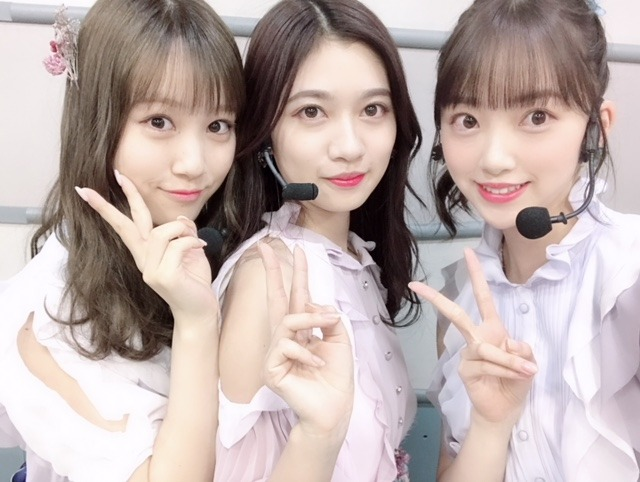

2019/0101Tue2019
新年あけましておめでとうございます☺︎
みなさんはどんなお正月をお過ごしですか？
私は、絢音と焼肉ランチを食べに行きました
夜ご飯は家族でカニ鍋です
今は甘栗とみかんを食べていて、
はい、、食べてばかりです、笑
ですが！
2019年は"毎日腹筋50回"を目標としているので
早速今からしてきます〜〜

や！！
今年は嬉しいことに
1月23日24:59〜連続ドラマ「ザンビ」
春 「遊戯みたいにいかない」第1話ゲスト
6月28日「ホットギミック」公開
が控えています...
緊張...
乃木坂46の一員として今のわたしにできることを
グループの中でも精一杯に頑張りたいですし
個人でもいろんな経験を積んで力をつけたいです
まだまだ未熟者ですが今年もみなさんと一緒に楽しい日々を創りたいな〜〜✨
よろしくお願いいたします！！
そして先日、シンクロニシティでレコード大賞を2年連続いただきました
まさか頂けるとは思わなくて驚きましたが
みんなで泣いて喜び、本当に嬉しかったです
私個人ではシンクロニシティに人生を描き、
インフルエンサーにはプライドと気迫を込め、
感情優先のパフォーマンスができたかな...？と思っています
見てくださった方に私達の、乃木坂や曲にかける想いが少しでも伝わっていたら嬉しい限りです
かわいい新衣装〜☺︎
お気に入り！
紅白歌合戦では七瀬さん最後の"帰り道は遠回りしたくなる"を披露させていただきました
バナナマンさんのサプライズと、
七瀬さんの溢れるみずみずしい笑顔が印象的でした！
バースデーライブまで少し空きますが
ちょっぴり早めに...
七瀬さん、本当にお疲れ様でした☺︎
七瀬さんにしかできない表情やパフォーマンスが好きで、いつもアイドルはパフォーマンスで自分を表し、
たくさんの人を惹きつけることが
なによりも大切で必要で魅力的な事に何度も気付かされました...
昔はダンスが苦手でどちらかというと嫌いな方だった私が、七瀬さんの背中を見てまだまだ研究中だし上手とは言えないけど今ではダンスが大好きになりました✨

バースデーライブたのしみです！
CDTVでは帰り道、シンクロニシティ、ジコチューのメドレーを披露しました
年があけて一発目の歌番組、みんなでわちゃわちゃ楽しくできたなぁ
アドレナリン効果もありそう！笑

みなみ らんぜ わたし
何だかんだ移動とか待機中とか一緒にいることが多くて
歌を歌ったりしてノリノリしてます、

今年も乃木坂46をよろしくお願いします！
みなさんが、だいすきです(＾ｰ^)
では。
2019/01/01 21:18
コメント(678)
あけましておめでとう！！
今年も活躍楽しみにしてます！！
今年も活躍楽しみにしてます！！
あけましておめでとうございます！
レコード大賞受賞おめでとう！乃木坂2年連続すごいです!!
紅白歌合戦、なあちゃん最後の紅白だったのは寂しいですね、でも素晴らしいパフォーマンスでした（*＾＾*)
CDTVなどみましたが乃木坂46の曲はいい曲ばかり（*＾＾*)
これからも乃木坂46を応援してます！頑張ってください( ⸝⸝⸝¯ ¯⸝⸝⸝ )
レコード大賞受賞おめでとう！乃木坂2年連続すごいです!!
紅白歌合戦、なあちゃん最後の紅白だったのは寂しいですね、でも素晴らしいパフォーマンスでした（*＾＾*)
CDTVなどみましたが乃木坂46の曲はいい曲ばかり（*＾＾*)
これからも乃木坂46を応援してます！頑張ってください( ⸝⸝⸝¯ ¯⸝⸝⸝ )
明けましておめでとう
いつもいつもマメにブログを更新してくれてありがとう！
今年も楽しみにしています
年末は忙しくて大変だったと思います。
沢山食べて(笑)
ゆっくり休んでください。
いつもいつもマメにブログを更新してくれてありがとう！
今年も楽しみにしています
年末は忙しくて大変だったと思います。
沢山食べて(笑)
ゆっくり休んでください。
どーも。愛媛の野球バカです。
未央奈あけましておめでとう！
レコ大おめでとう
紅白も感動したよ！！
今年も1年頑張ってね！！
未央奈あけましておめでとう！
レコ大おめでとう
紅白も感動したよ！！
今年も1年頑張ってね！！
あけおめ！！今年もいっぱい応援するよ会いにも行くよ。年末お疲れ様。
みおちゃん、あけましておめでとう！
レコード大賞から紅白、CDTVに
至るまで、凄い素敵だったよ！
去年も、みおちゃんと、乃木坂46の
皆さんと、一緒の時間を過ごせて
幸せでした。今年も応援してます！
みおちゃん、乃木坂ちゃん大好き！
レコード大賞から紅白、CDTVに
至るまで、凄い素敵だったよ！
去年も、みおちゃんと、乃木坂46の
皆さんと、一緒の時間を過ごせて
幸せでした。今年も応援してます！
みおちゃん、乃木坂ちゃん大好き！
ドラマと映画すごいね！紅白とCDTVとレコ大お疲れ様です！
明けましておめでとう！
腹筋頑張ってね
腹筋頑張ってね
堀ちゃん あけましておめでとうございます( ^ω^ )
2期のエースとして今年も活躍して下さい！
2期のエースとして今年も活躍して下さい！
あけましておめでとうございます。
や！！
今年も宜しくお願い致します。
焼肉！
カニ！！
･･･腹筋！！！
よし、程々にしよ(笑)
レコード大賞おめでとうございます。
ダンス･･･そうだったんですか！
少なくとも最近･･･そんな感じには見えませんよ？
お～肩だ･･･
(これ以上は誰かを思い出しそうなので･･･笑)
個人のお仕事のご活躍。
更に発展していくといいですね♪
や！！
今年も宜しくお願い致します。
焼肉！
カニ！！
･･･腹筋！！！
よし、程々にしよ(笑)
レコード大賞おめでとうございます。
ダンス･･･そうだったんですか！
少なくとも最近･･･そんな感じには見えませんよ？
お～肩だ･･･
(これ以上は誰かを思い出しそうなので･･･笑)
個人のお仕事のご活躍。
更に発展していくといいですね♪
あけましておめでとうございます。
今年もよろしくお願いします。
乃木坂みんなの笑顔が好き。
未央奈も今年１年笑顔でいてください。
その笑顔が私の元気の源です。
頑張ってね。
ね、箸くん。
今年もよろしくお願いします。
乃木坂みんなの笑顔が好き。
未央奈も今年１年笑顔でいてください。
その笑顔が私の元気の源です。
頑張ってね。
ね、箸くん。
みおな〜
お疲れ様〜
紅白最高だったよ！
なぁちゃんは本当に乃木坂にとって大切な存在やったって
改めて気づかされた！
来年もいろんなことあると思うけど頑張ってね！
応援しとるよ！
ではでは
お疲れ様〜
紅白最高だったよ！
なぁちゃんは本当に乃木坂にとって大切な存在やったって
改めて気づかされた！
来年もいろんなことあると思うけど頑張ってね！
応援しとるよ！
ではでは
明けましておめでとう！
今年は念願だった個握に行くよ！
今年は念願だった個握に行くよ！
今年も未央奈さん推しで突っ走りますのでよろしく！
期待してるよ！
期待してるよ！
今年も頑張ってください！応援しています！
みおなファイトーー！！
みおなファイトーー！！
あけましておめでとう！
今年も応援します！❤️
体調には気をつけて
今年も応援します！❤️
体調には気をつけて
あけましておめでとう！2019年もよろしくね！
1月には未央奈との握手も控えてるから、凄い楽しみだよ！
レコード大賞受賞おめでとう！そして紅白のパフォーマンスも素晴らしかった！CDTVで3曲も披露してて、ファンとして嬉しい限りでした。未央奈は湯河原行ったみたいだけど、ちょうど先月の末に草津温泉行ってきました〜！凄いよかった、温泉街もね！是非、行ってみてね！
今年も未央奈にとって良い年になりますように…
1月には未央奈との握手も控えてるから、凄い楽しみだよ！
レコード大賞受賞おめでとう！そして紅白のパフォーマンスも素晴らしかった！CDTVで3曲も披露してて、ファンとして嬉しい限りでした。未央奈は湯河原行ったみたいだけど、ちょうど先月の末に草津温泉行ってきました〜！凄いよかった、温泉街もね！是非、行ってみてね！
今年も未央奈にとって良い年になりますように…
あけましておめでとうございます٩(*´︶`*)۶
紅白もレコ大もCDTVも良かったよ～！
髪長いのも可愛い♡♡
私の今年の目標は未央奈の握手会に行くことです！
紅白もレコ大もCDTVも良かったよ～！
髪長いのも可愛い♡♡
私の今年の目標は未央奈の握手会に行くことです！
箸くんのトレーニングも欠かさずにね
あけおめー！！
今年も頑張ってねー！
今年も頑張ってねー！
あけおめことよろ！
未央奈ちゃん明けましておめでとうございます。
アイドルとしてさらに上っていく未央奈ちゃんを支えられるよう微力ながら頑張って応援します。
今年もよろしくお願いいたします。
アイドルとしてさらに上っていく未央奈ちゃんを支えられるよう微力ながら頑張って応援します。
今年もよろしくお願いいたします。
あけましておめでとうございます。
犬と未央奈の写真可愛すぎです！大好きです！
犬と未央奈の写真可愛すぎです！大好きです！
こんにちはです❤️
あけましておめでとうございます

今年もよろしくお願いしますね❤️
遅れてごめん寝❤️
少ない休みを満喫………
できるかなぁ〜
相変わらずだけど……
応援しますね❤️
みおなちゃん❤️
ガンバりやぁよ❤️
（＾_＾）Ｖ
☆☆☆☆☆☆☆☆☆☆☆☆☆☆
。
あけましておめでとうございます
今年もよろしくお願いしますね❤️
遅れてごめん寝❤️
少ない休みを満喫………
できるかなぁ〜
相変わらずだけど……
応援しますね❤️
みおなちゃん❤️
ガンバりやぁよ❤️
（＾_＾）Ｖ
☆☆☆☆☆☆☆☆☆☆☆☆☆☆
。
*☆━｡ﾟΑКЁ.+ﾟ(ｐ･ω･｡q)ﾟ+ОМЁ.ﾟ｡━★*!!
堀ちゃん！ 腹筋だったらアブローラーがオススメよ！！
あけましておめでとうございます！！
明けまして
おめでとうございます。
今年もよろしくね☺
おめでとうございます。
今年もよろしくね☺
あけましておめでとうございます！！
私も食べて、寝てばかりの寝正月。ダメダメ。私も目標もって2019年生きよう。未央奈有り難う。あ～ドラマに出たい。
あけおめ！新年早々、ブログ更新ありがとうです！！！
モバメも毎回、楽しく、良い雰囲気ですね！！！！
今年も大活躍しそうですねー、自信持って羽ばたいてください
応援させていただきます
体調整えて無理せずに、頑張ってお幸せになってくださいね！！
モバメも毎回、楽しく、良い雰囲気ですね！！！！
今年も大活躍しそうですねー、自信持って羽ばたいてください
応援させていただきます
体調整えて無理せずに、頑張ってお幸せになってくださいね！！
こんにちは～
、、明けましておめでとう～
、、新しい衣装、、ちょっと、フィギュアスケートの、、コスチューム、みたいだね～
、、今年は、、映画の公開とか、、色々あって、、楽しみだね～
、、じゃあ、、またね～
、、明けましておめでとう～
、、新しい衣装、、ちょっと、フィギュアスケートの、、コスチューム、みたいだね～
、、今年は、、映画の公開とか、、色々あって、、楽しみだね～
、、じゃあ、、またね～
あけましておめでとうございます！
正月は食べ過ぎてしまうので反省です。笑
レコード大賞受賞おめでとう！2年連続すごい!!
紅白歌合戦、なあちゃん最後の紅白だったのは寂しかったけど素晴らしいパフォーマンスでした（*＾＾*)
CDTVなどみましたが乃木坂46の曲はどれもいい曲ばかりでとてもよかったです( ⸝⸝⸝¯ ¯⸝⸝⸝ )
正月は食べ過ぎてしまうので反省です。笑
レコード大賞受賞おめでとう！2年連続すごい!!
紅白歌合戦、なあちゃん最後の紅白だったのは寂しかったけど素晴らしいパフォーマンスでした（*＾＾*)
CDTVなどみましたが乃木坂46の曲はどれもいい曲ばかりでとてもよかったです( ⸝⸝⸝¯ ¯⸝⸝⸝ )
Wishing you a happy New Year!
レコ大でのシンクロニシティ、とても良かったです
みんなが笑って歌う姿がとても清々しくて
1年間の疲れを忘れさせるほっとできた瞬間でした
それからみおなのダンスはしなやかで綺麗で好きです
今年はまたフロントで・・・、そして・・・、また見てみたいです
あとは「ホットギミック」が楽しみで、公開が待ち遠しいです
今年もいろいろな活動を通していろいろなみおなを見せてください
さらなる活躍を期待しています
I know with your dedication
you'll accomplish all your goals and dreams.
新年あけましておめでとうございます。
2019年も、何卒よろしくお願いします。
年末年始、テレビの前で未央奈のパフォーマンスを見ることができました！
日本レコード大賞では2年連続の大賞受賞。
曲は「シンクロニシティ」での受賞でしたが、西野さんには心に残る記念日になったんじゃないかなと思いました。
1回目の曲披露での未央奈は、儚くも時には明るく楽しい表情で、ダンスも惹かれるものがあって素敵でした。
2回目の曲披露では、普段から泣かないようにしているけど、嬉し涙を流している姿が見れて。「本当に嬉しそうだな」っていうのが伝わってきました。
僕もテレビの前で「よっしゃー！！」って叫んじゃいました笑 めちゃくちゃ嬉しかった！
紅白歌合戦では「帰り道は遠回りしたくなる」を披露。西野さんが乃木坂46としての最後の舞台となりましたね。悲しいことだけど、「卒業」は必ずやってくることだし、覚悟を決めなきゃいけなくて。
これから自分たちが乃木坂46を支えていくんだっていう気持ちにもさせてくれるきっかけでもあって。先輩から学んだことを受け継いで、残していく。乃木坂46をもっともっと成長させていくために、そして未央奈らしさを発揮できるように。
今年は、より多くの方に堀未央奈っていうアイドルを知ってもらいたいなーって思いました。
でも、良かったですよね。
最後の最後でバナナマンさんが来て「お兄ちゃん来たよー！」って言ってくれた時は、やっぱり来てくれたー！！って思いました。
少し早いけど、西野さんの門出を祝って、この先の人生を応援していきたいですね。。
お正月、楽しく過ごしていきましょー！
僕もたくさん食べて太ってますよ！笑
なんなら、痩せすぎてるのでここぞとばかりに食べてます。もともと大食いなんですよー。
未央奈も相変わらずたくさんご飯を食べてるようで、安心してます。やっぱご飯食べているときは幸せですよね〜
いろいろ話したいことはあるけれど、
今度の握手会でお話ししましょー。
って言っても、そこでも収まりきらないと思うけど笑
じゃあ、また！
家族とお正月をゆっくりのんびり過ごしていきましょう。そして、今年も未央奈にとって良い一年になりますように。未央奈のこと応援させてください、よろしくお願いしますm(_ _)m
ではでは、ねこでした。
かわいい女の子が努力する姿はホントに和むよね。
それはそうとして未央奈は今年はどんな一年にするつもり？
オレは飛躍の年にしようと思ってる。
今まで精神的に病んでいていろいろと大変だったけど、ようやく復活して一人の大人として頑張ることが出来るようになったから。
これからのオレの活躍に期待しててくれな。
必ず一人のアーティストとして未央奈に会いに行くから。
そしたら、またコメントするな。
今年も一年よろしくお願いしますヽ(・∀・)ノ
それはそうとして未央奈は今年はどんな一年にするつもり？
オレは飛躍の年にしようと思ってる。
今まで精神的に病んでいていろいろと大変だったけど、ようやく復活して一人の大人として頑張ることが出来るようになったから。
これからのオレの活躍に期待しててくれな。
必ず一人のアーティストとして未央奈に会いに行くから。
そしたら、またコメントするな。
今年も一年よろしくお願いしますヽ(・∀・)ノ
堀ちゃん、大好きだよー
あけおめみおなー
あけましておめでとうございます!
あけましておめでとう！
レコ大、紅白、CDTVお疲れ様でした。
どれもこれも皆素敵でした。
バナナマンのサプライズには驚きました。
2019も応援しています。
レコ大、紅白、CDTVお疲れ様でした。
どれもこれも皆素敵でした。
バナナマンのサプライズには驚きました。
2019も応援しています。
未央奈さん、ブログ更新ありがとうm(__)m新年明けましておめでとうございます m(__)m今年もよろしくお願いいたします 日本レコード大賞受賞したね おめでとうございます あと、紅白歌合戦ご苦労様でしたm(__)mお互いに頑張りましょうね✋
明けましておめでとうございます。
今年一年も乃木坂応援しますよ！
紅白もお疲れさまです。
楽しかったし凄かったね！
出演メンバーもめっちゃ楽しかったのでは？
豪華なアーティスト。
録画していたからあらためて見て感動したよ！
なぁちゃんの卒業も寂しいね！
でもちゃんと背中を押してあげんとね！
良き門出に向かって。
堀ちゃん達が中心になって継承しつつ新しい乃木坂目指してほしいです。
応援します！
俺も握手会今年は行く予定、かな？(笑)
っていうか会いたいです。
今年一年の楽しみかな？
まぁ勿論仕事も頑張らんとね(笑)
さあ2019年頑張っていこう～。
ではではまたね！
正月休み食べすぎホンマ注意ね(笑)
活躍期待してます。
ほなね、堀ちゃん！
今年一年も乃木坂応援しますよ！
紅白もお疲れさまです。
楽しかったし凄かったね！
出演メンバーもめっちゃ楽しかったのでは？
豪華なアーティスト。
録画していたからあらためて見て感動したよ！
なぁちゃんの卒業も寂しいね！
でもちゃんと背中を押してあげんとね！
良き門出に向かって。
堀ちゃん達が中心になって継承しつつ新しい乃木坂目指してほしいです。
応援します！
俺も握手会今年は行く予定、かな？(笑)
っていうか会いたいです。
今年一年の楽しみかな？
まぁ勿論仕事も頑張らんとね(笑)
さあ2019年頑張っていこう～。
ではではまたね！
正月休み食べすぎホンマ注意ね(笑)
活躍期待してます。
ほなね、堀ちゃん！
あけましておめでとうございます！
2019年、堀未央奈さんにとってとても素晴らしい飛躍の年になりますよ！！！バンザーイ╰(*´︶`*)╯
応援するぞ〜٩( ᐛ )وワクワク
2019年、堀未央奈さんにとってとても素晴らしい飛躍の年になりますよ！！！バンザーイ╰(*´︶`*)╯
応援するぞ〜٩( ᐛ )وワクワク
未央奈あけおめ！
七瀬出してくれてありがとう！！
七瀬出してくれてありがとう！！
あけおめ！
俺も今日から腹筋50回頑張るよ！
俺も今日から腹筋50回頑張るよ！
未央奈ブログ更新ありがとう！
明けましておめでとう！
今年は色々公開されるから未央奈が女優として注目を集めることを期待してます。
年末もテレビで未央奈のパフォーマンスを見られて嬉しかったよ。
新しい衣装も似合ってて可愛かった。
今年もよろしくお願いします。
未央奈が大好きです。
明けましておめでとう！
今年は色々公開されるから未央奈が女優として注目を集めることを期待してます。
年末もテレビで未央奈のパフォーマンスを見られて嬉しかったよ。
新しい衣装も似合ってて可愛かった。
今年もよろしくお願いします。
未央奈が大好きです。
みおにゃブログ更新有難う(^人^)
明けましておめでとうございます。
多分みおにゃへのコメントは初かな？ww
これからも沢山の活躍を楽しみにしてます(^人^)
併せて絢音ちゃんも引っ張ってあげてね(^人^)
明けましておめでとうございます。
多分みおにゃへのコメントは初かな？ww
これからも沢山の活躍を楽しみにしてます(^人^)
併せて絢音ちゃんも引っ張ってあげてね(^人^)
ども、なぁちゃん推しのあかすりです(^_^)v
新年明けましておめでとうございます(^_^)
まずは、シンクロニシティレコード大賞受賞おめでとうございます＼(^-^)／
正直2連覇は難しいと思ってたからビックリ。
なぁちゃんとまいやんの抱き合う姿に(T_T)
受賞後の歌唱で歌うみんなの顔が綺麗だった。
受賞はシンクロニシティという1曲に対してだけど、この結果は2018年の活動全てに対してのものだと僕はおもってます。
本当におめでとう！
卒業するなぁちゃんにもいいプレゼントになったと思います。ありがとう。
そして紅白、今年はいろんな企画に参加してたね。
U.S.A.にも参加するとは！
帰り道とても綺麗だったよ。
その途中バナナマンが裏トーク席にいるのが映って「バナナマンが来てる！」って声出しちゃった(^_^;)
歌い終わったあとバナナマンが来てる事に驚いてる顔と「お兄ちゃん」って呼ぶとこ涙腺が…
忙しいのになぁちゃんの両親に会いにいったりサプライズで出演してくれたり、バナナマンはほんとにいいお兄ちゃんだね。そしてNHKにも感謝m(_ _)m
最後のサザンはすごかったなぁ。ユーミンと桑田佳祐が2人で歌うなんて音楽業界にとってもかなり貴重。君たちはそこに立ち会えたんだもん。
新年明けましておめでとうございます(^_^)
まずは、シンクロニシティレコード大賞受賞おめでとうございます＼(^-^)／
正直2連覇は難しいと思ってたからビックリ。
なぁちゃんとまいやんの抱き合う姿に(T_T)
受賞後の歌唱で歌うみんなの顔が綺麗だった。
受賞はシンクロニシティという1曲に対してだけど、この結果は2018年の活動全てに対してのものだと僕はおもってます。
本当におめでとう！
卒業するなぁちゃんにもいいプレゼントになったと思います。ありがとう。
そして紅白、今年はいろんな企画に参加してたね。
U.S.A.にも参加するとは！
帰り道とても綺麗だったよ。
その途中バナナマンが裏トーク席にいるのが映って「バナナマンが来てる！」って声出しちゃった(^_^;)
歌い終わったあとバナナマンが来てる事に驚いてる顔と「お兄ちゃん」って呼ぶとこ涙腺が…
忙しいのになぁちゃんの両親に会いにいったりサプライズで出演してくれたり、バナナマンはほんとにいいお兄ちゃんだね。そしてNHKにも感謝m(_ _)m
最後のサザンはすごかったなぁ。ユーミンと桑田佳祐が2人で歌うなんて音楽業界にとってもかなり貴重。君たちはそこに立ち会えたんだもん。
未央奈あけおめことよろ


新年あけましておめでとうございます
早速1発目の更新ありがとう
まずはレコード大賞二連覇おめでとうございます
シンクロニシティは一番大好きな歌だし、ダンスにすごい表現力があって選ばれて嬉しいです
涙を流しながら歌ってるみんなの姿は、誰よりもカッコよかったよ！
本当におめでとう！
紅白は白組が勝ちましたが、楽しそうに歌ってたし公式お兄ちゃんが来たからファンとしては最高でした
CDTVは、新年すぐに堀ちゃんのウィンクを確認しましたよ（とにかくたくさん堀ちゃんを観れたから良かった）
なぁちゃんと堀ちゃんのツーショットは滅多に見ないので最高です
なぁちゃんは、自分が堀ちゃんのファンになる前に乃木坂を知るきっかけを作ってくれた人なので、遂に卒業してしまって寂しいです
なぁちゃんがいなかったら、乃木坂自体を知る事もなく堀ちゃんを好きになる事もなかったかもしれないので、ありがとうの気持ちでいっぱいです
堀ちゃんもなぁちゃんを見てダンスが好きになったという事でお互いに彼女はインフルエンサーですね
バースデーライブは応募しているので当選したら絶対行きます
オフショルの新衣装とても可愛いです（白すぎる笑）
2019年は、ドラマや映画に堀ちゃんが出るので楽しみにしてます
今年もたくさん握手会に行けるようにしますので本年もよろしくお願いします！（とりあえず2月16日の握手会には行くよ）
今日の夜は1発目のレコメンなので聴きますよ
長めになっちゃいましたが読んでくれてたら幸いです
ありがとうございました